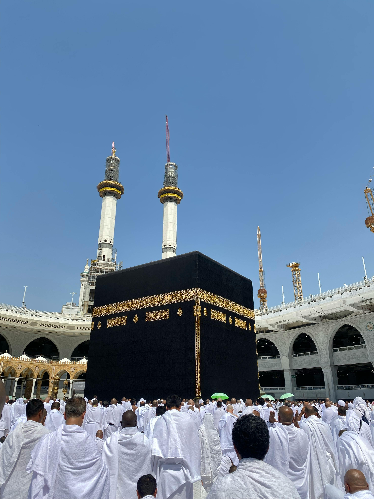

Haji dan Umrah

Haji dan Umrah adalah dua ibadah penting dalam agama Islam yang dilakukan oleh umat Muslim yang mampu secara fisik dan finansial. Berikut penjelasan singkat tentang masing-masing ibadah:
Haji
Waktu Pelaksanaan: Haji hanya dapat dilaksanakan pada bulan Dzulhijjah, bulan terakhir dalam kalender Hijriyah, terutama pada tanggal 8 hingga 12 Dzulhijjah.
- Ihram: Niat memulai ibadah Haji dengan memakai pakaian khusus (kain ihram bagi laki-laki dan pakaian sederhana bagi perempuan) dan menghindari hal-hal yang dilarang dalam keadaan ihram.
- Wukuf di Arafah: Berdiam diri di Padang Arafah pada tanggal 9 Dzulhijjah, dari waktu Dzuhur hingga Maghrib.
- Tawaf Ifadah: Mengelilingi Ka'bah sebanyak tujuh kali setelah wukuf di Arafah.
- Sa'i: Berjalan bolak-balik antara bukit Safa dan Marwah sebanyak tujuh kali.
- Tahallul: Mencukur atau memotong sebagian rambut kepala sebagai tanda selesainya ibadah Haji.
- Mabit di Muzdalifah: Menginap di Muzdalifah setelah wukuf di Arafah pada malam tanggal 10 Dzulhijjah.
- Melontar Jumrah: Melemparkan batu kecil ke tiga tiang (jumrah) di Mina pada tanggal 10, 11, dan 12 Dzulhijjah.
Umrah
Waktu Pelaksanaan: Umrah dapat dilaksanakan kapan saja sepanjang tahun, tidak terbatas pada bulan Dzulhijjah.
- Ihram: Niat memulai ibadah Umrah dengan memakai pakaian ihram dan menghindari hal-hal yang dilarang dalam keadaan ihram.
- Tawaf: Mengelilingi Ka'bah sebanyak tujuh kali.
- Sa'i: Berjalan bolak-balik antara bukit Safa dan Marwah sebanyak tujuh kali.
- Tahallul: Mencukur atau memotong sebagian rambut kepala sebagai tanda selesainya ibadah Umrah.
Meskipun Haji dan Umrah memiliki beberapa kesamaan, ada perbedaan utama dalam waktu pelaksanaan dan beberapa rukun atau tahapan yang harus dilaksanakan. Haji merupakan salah satu dari lima rukun Islam yang wajib dilaksanakan oleh setiap Muslim yang mampu setidaknya sekali seumur hidup, sedangkan Umrah adalah ibadah sunnah yang dianjurkan untuk dilakukan kapan saja sepanjang tahun.